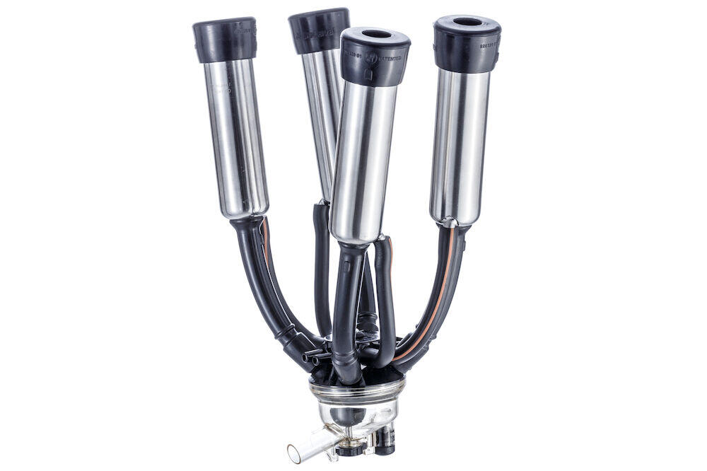

A well-proven and simple, providing efficient milking on most cow and buffalo breeds. The transparent claw is very easy to handle and allows you to see the milk flow to help reduce overmilking. they gives efficient performance for small to mid-sized dairy operations. they are good choice for producers milking less than eight hours a day or with an annual production of less than 8000 to 10000 kg per lactation.
Clusters
DeLaval milking cluster MC11 and MC31
Keeping Your DeLaval Clusters in Top Condition
- Ensures optimal milk quality
- Maximizes milking efficiency
- Prolongs equipment lifespan
- Reduces the risk of mastitis
- Enhances cow comfort
- Maintains consistent performance
- Minimizes downtime
- Improves hygiene and cleanliness
Delaval Liner Replacement Time Calculator
DeLaval Liner Replacement time Calculator

Learn More About DeLaval Liner Replacement
How To Replace DeLaval Liners
- Remove the Old Liners:
- Clean the Shells:
- Install the New Liners:
- Test the System:
- Record Maintenance:
Pull out the old liners from the shell.
Using appropriate cleaning agents, clean the inside of the shells and the milk tubes. Ensure they are completely dry before installing the new liners.
Slide the new liners into the shells. Ensure that the liners are properly seated and fully extended into the shells.
Ensure that the liners are not twisted and that they fit snugly into the shell and the claw.
During the first milking session with the new liners, monitor closely to ensure there are no issues with milk flow or liner performance.
Keep a log of the liner replacement, noting the date and any observations. This helps in maintaining a regular replacement schedule.